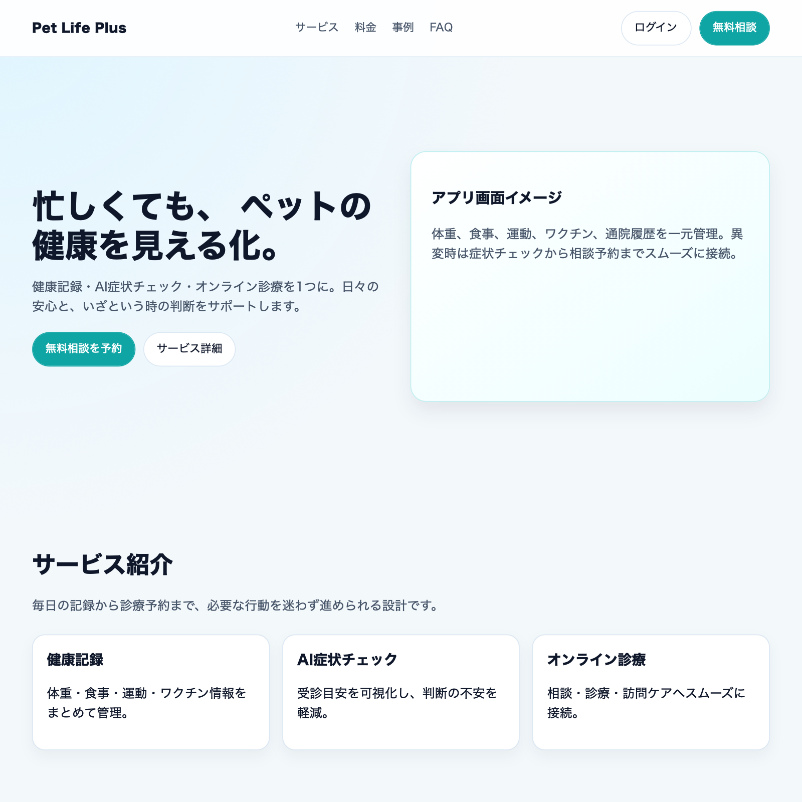

サービス紹介カード
健康記録・AI症状チェック・オンライン診療を一体化した導線を提供します。
1. 信頼感
理由：健康管理・診療導線を扱うため、安心して情報入力・相談できる印象を最優先する必要がある。
表現方法：青・白を基調にした配色、十分な余白、見出し階層の明確化、実績や監修情報を上部に配置する。
2. 伴走感
理由：忙しい飼い主が「ひとりで判断しなくてよい」と感じる体験が継続利用につながるため。
表現方法：ミント系の補助色、ガイド文・次アクションの明示、ステップ表示で進行状況を可視化する。
3. 俊敏性
理由：体調不安時は素早い判断・予約が必要で、迷うUIは離脱や不安増大につながるため。
表現方法：主CTAを目立たせる、1画面1目的の構成、入力項目の最小化、検索/予約導線を固定配置する。
| 色の種類 | カラーコード | 色見本 | 使用場面 |
|---|---|---|---|
| メインカラー | #FF8FB1 | 主要CTA、強調ラベル、ブランド訴求 | |
| サブカラー | #8C6EE6 | 補助強調、バナー、アクセント導線 | |
| アクセントカラー | #C9F7EF | 背景ハイライト、補助カード、安心感の演出 | |
| 背景色 | #FFF9FB | ページ背景、余白領域 | |
| テキスト色（メイン） | #4A2D3C | 本文、重要情報 | |
| テキスト色（サブ） | #7A6170 | 補助説明、注釈、ヒント文 |
選定理由（色彩心理を考慮）
・メインカラー（#FF8FB1）：親しみと行動喚起を両立し、相談導線を見つけやすくするため。
・サブカラー（#8C6EE6）：情報の区切りや補助強調に使い、視線誘導を安定させるため。
・アクセントカラー（#C9F7EF）：安心感のある補助背景として、医療系の緊張を和らげるため。
・背景色（#FFF9FB）：高明度でやわらかい背景にし、長時間閲覧でも疲れにくくするため。
・テキスト色（#4A2D3C / #7A6170）：コントラストを確保しつつ、全体トーンを統一するため。
実装では「安心感」と「行動しやすさ」を両立するため、やわらかい配色の中でCTAを明確に目立たせる設計とする。
| 要素 | フォント名 | サイズ | 太さ | 行間 | 用途 |
|---|---|---|---|---|---|
| h1（大見出し） | Fredoka | 30px | 700 | 1.18 | ページタイトル、ヒーロー見出し |
| h2（中見出し） | Fredoka | 22px | 600 | 1.3 | セクション見出し |
| h3（小見出し） | Fredoka | 16px | 600 | 1.3 | サブセクション見出し |
| 本文 | M PLUS Rounded 1c | 16px | 400 | 1.6 | 通常テキスト、説明文 |
| キャプション | M PLUS Rounded 1c | 13px | 600 | 1.5 | 注釈、画像説明、補助情報 |
| ボタン | M PLUS Rounded 1c | 14px | 700 | 1.2 | ボタンテキスト |
Google Fonts 運用方針（日本語対応）
見出しフォント：Fredoka
本文フォント：M PLUS Rounded 1c
letter-spacing 推奨値
h1：0.01em / h2：0em / h3：0em / 本文：0em / キャプション：0em / ボタン：0.01em
見出しは親しみやすい丸み、本文は可読性を重視し、モバイルでも読みやすい字面を優先する。
デザイン条件
メインカラー：#FF8FB1 / フォント：M PLUS Rounded 1c / 角丸：999px
HTML
<div class="btn-demo">
<button class="btn btn-primary">保存する</button>
<button class="btn btn-secondary">戻る</button>
<button class="btn btn-danger">削除する</button>
</div>CSS
.btn {
font-family: "M PLUS Rounded 1c", sans-serif;
font-size: 14px;
font-weight: 600;
letter-spacing: 0.02em;
line-height: 1.2;
border-radius: 14px;
padding: 10px 16px;
border: 1px solid transparent;
cursor: pointer;
transition: background-color .2s ease, color .2s ease, border-color .2s ease, transform .1s ease;
}
.btn:active {
transform: translateY(1px);
}
.btn-primary {
background: #FF8FB1;
color: #FFFFFF;
border-color: #FF8FB1;
}
.btn-primary:hover {
background: #FF6E9A;
border-color: #FF6E9A;
}
.btn-secondary {
background: #FFFFFF;
color: #FF8FB1;
border-color: #FF8FB1;
}
.btn-secondary:hover {
background: #EFF6FF;
}
.btn-danger {
background: #FFFFFF;
color: #DC2626;
border-color: #DC2626;
}
.btn-danger:hover {
background: #FEE2E2;
color: #B91C1C;
border-color: #B91C1C;
}表示サンプル
HTML
<form class="form-demo">
<label class="field">
<span class="field-label">テキスト入力</span>
<input type="text" class="control" placeholder="例：佐藤 美咲" />
</label>
<label class="field">
<span class="field-label">セレクトボックス</span>
<select class="control">
<option>選択してください</option>
<option>有効</option>
<option>停止</option>
</select>
</label>
<label class="field">
<span class="field-label">テキストエリア</span>
<textarea class="control" placeholder="備考を入力"></textarea>
</label>
<div class="field">
<span class="field-label">チェックボックス</span>
<label class="check-item"><input type="checkbox" class="check" /> 利用規約に同意する</label>
</div>
<div class="field">
<span class="field-label">ラジオボタン</span>
<label class="check-item"><input type="radio" name="type" class="check" /> 個人</label>
<label class="check-item"><input type="radio" name="type" class="check" /> 法人</label>
</div>
<div class="field">
<span class="field-label">トグルスイッチ</span>
<label class="switch">
<input type="checkbox" class="switch-input" />
<span class="switch-slider"></span>
<span class="switch-text">通知を有効にする</span>
</label>
</div>
<label class="field">
<span class="field-label">エラー表示例</span>
<input type="text" class="control is-error" value="入力エラー" />
<span class="error-text">メールアドレスの形式が正しくありません。</span>
</label>
</form>CSS
.form-demo {
display: grid;
gap: 12px;
}
.field {
display: grid;
gap: 6px;
}
.field-label {
font-family: "M PLUS Rounded 1c", sans-serif;
font-size: 13px;
font-weight: 600;
color: #FF8FB1;
letter-spacing: 0.01em;
}
.control {
width: 100%;
font-family: "M PLUS Rounded 1c", sans-serif;
font-size: 14px;
line-height: 1.5;
color: #4A2D3C;
background: #FFFFFF;
border: 1px solid #CBD5E1;
border-radius: 10px;
padding: 10px 12px;
transition: border-color .2s ease, box-shadow .2s ease, background-color .2s ease;
}
textarea.control {
min-height: 110px;
resize: vertical;
}
.control:focus {
outline: none;
border-color: #FF8FB1;
box-shadow: 0 0 0 3px rgba(29, 78, 216, 0.18);
background: #F8FAFF;
}
.control.is-error {
border-color: #DC2626;
background: #FEF2F2;
}
.control.is-error:focus {
border-color: #B91C1C;
box-shadow: 0 0 0 3px rgba(220, 38, 38, 0.16);
}
.error-text {
font-size: 12px;
color: #DC2626;
}
.check-item {
display: inline-flex;
align-items: center;
gap: 8px;
margin-right: 14px;
font-size: 14px;
color: #4A2D3C;
}
.check {
accent-color: #FF8FB1;
width: 16px;
height: 16px;
}
.switch {
display: inline-flex;
align-items: center;
gap: 10px;
cursor: pointer;
}
.switch-input {
position: absolute;
opacity: 0;
width: 0;
height: 0;
}
.switch-slider {
width: 44px;
height: 24px;
border-radius: 999px;
background: #cbd5e1;
position: relative;
transition: background-color .2s ease;
}
.switch-slider::after {
content: "";
position: absolute;
top: 3px;
left: 3px;
width: 18px;
height: 18px;
border-radius: 50%;
background: #ffffff;
box-shadow: 0 1px 2px rgba(15, 23, 42, 0.25);
transition: transform .2s ease;
}
.switch-input:checked + .switch-slider {
background: #FF8FB1;
}
.switch-input:checked + .switch-slider::after {
transform: translateX(20px);
}
.switch-input:focus + .switch-slider {
box-shadow: 0 0 0 3px rgba(29, 78, 216, 0.18);
}
.switch-text {
font-size: 14px;
color: #4A2D3C;
}表示サンプル
HTML
<!-- カード -->
<article class="ui-card">
<img class="ui-card-image" src="../img/top.html.png" alt="カード画像" />
<div class="ui-card-body">
<h3 class="ui-card-title">サービス紹介カード</h3>
<p class="ui-card-text">健康記録・AI症状チェック・オンライン診療を一体化した導線を提供します。</p>
<a class="btn btn-primary" href="#">詳細を見る</a>
</div>
</article>
<!-- テーブル -->
<table class="ui-table">
<thead>
<tr><th>ID</th><th>氏名</th><th>ステータス</th><th>更新日</th></tr>
</thead>
<tbody>
<tr><td>U-001</td><td>佐藤 美咲</td><td>有効</td><td>2026-05-13</td></tr>
<tr><td>U-002</td><td>田中 亮</td><td>有効</td><td>2026-05-12</td></tr>
</tbody>
</table>
<!-- アラート -->
<div class="ui-alert info">情報：プロフィールが更新されました。</div>
<div class="ui-alert success">成功：登録処理が完了しました。</div>
<div class="ui-alert warning">警告：未入力項目があります。</div>
<div class="ui-alert error">エラー：通信に失敗しました。</div>CSS
.ui-card {
width: min(360px, 100%);
border: 1px solid #d9e4f5;
border-radius: 14px;
background: #ffffff;
box-shadow: 0 10px 20px rgba(37, 99, 235, 0.08);
overflow: hidden;
}
.ui-card-image {
width: 100%;
height: 180px;
object-fit: cover;
display: block;
}
.ui-card-body { padding: 14px; }
.ui-card-title {
margin: 0 0 8px;
font-family: "M PLUS Rounded 1c", sans-serif;
font-size: 18px;
font-weight: 700;
color: #0f172a;
}
.ui-card-text {
margin: 0 0 12px;
font-size: 14px;
line-height: 1.7;
color: #64748b;
}
.ui-table {
width: 100%;
border-collapse: separate;
border-spacing: 0;
border: 1px solid #d9e4f5;
border-radius: 12px;
overflow: hidden;
}
.ui-table th, .ui-table td {
padding: 10px 12px;
border-bottom: 1px solid #e2e8f0;
text-align: left;
font-size: 14px;
}
.ui-table thead th {
background: linear-gradient(135deg, #eaf2ff 0%, #e8faf6 100%);
color: #0f172a;
font-weight: 700;
}
.ui-table tbody tr:nth-child(even) td {
background: #f8fbff;
}
.ui-table tbody tr:last-child td {
border-bottom: none;
}
.ui-alert {
border-radius: 10px;
padding: 10px 12px;
border: 1px solid transparent;
font-size: 14px;
margin-bottom: 8px;
}
.ui-alert.info {
background: #eff6ff;
border-color: #bfdbfe;
color: #1e40af;
}
.ui-alert.success {
background: #ecfdf3;
border-color: #86efac;
color: #166534;
}
.ui-alert.warning {
background: #fffbeb;
border-color: #fcd34d;
color: #92400e;
}
.ui-alert.error {
background: #fef2f2;
border-color: #fca5a5;
color: #b91c1c;
}表示サンプル
デザインコンセプト：信頼感 / 伴走感 / 俊敏性
| 項目 | 提案値 | 意図 |
|---|---|---|
| コンテンツ最大幅 | min(960px, 82vw) | 視認性と可読性を維持しつつ、カードUIの密度を安定させる。 |
| グリッドシステム | 基本1カラム。PC（768px以上）で hero: 1.2fr / 0.8fr、card/stats: 3列 | 同一コンポーネントを保ったまま、画面幅で情報量のみを調整する。 |
| セクション間の余白 | 36px（`.section`） | 縦スクロール時のテンポを保ち、連続閲覧時の疲労を抑える。 |
| 要素間の余白 | space-token基準：14px / 22px（tight / block） | カードUIの視線移動を短くし、必要情報にすぐ到達できるようにする。 |
| 角丸 | カード系：26px / 画像：18〜20px / ボタン：999px | 親しみやすさを出しつつ、情報ブロック境界を明確にする。 |
| シャドウ（box-shadow） | カード：0 10px 20px rgba(221, 136, 170, 0.12) | 背景からカードを浮かせ、タップ可能領域を直感的に示す。 |
| ブレークポイント | 単一主要BP：768px（未満=モバイル / 以上=PC） | 実装複雑度を抑えつつ、ナビ・カード列・CTA配置を明確に切替する。 |
実装補足（CSS変数例）
:root {
--space-section: 36px;
--space-block: 22px;
--space-tight: 14px;
}
.container { width: 82vw; max-width: 960px; }
.card { border-radius: 26px; box-shadow: 0 10px 20px rgba(221, 136, 170, 0.12); }
@media (min-width: 768px) {
.hero-grid { grid-template-columns: 1.2fr .8fr; gap: 24px; }
.card-grid, .stats-grid { grid-template-columns: repeat(3, 1fr); }
}